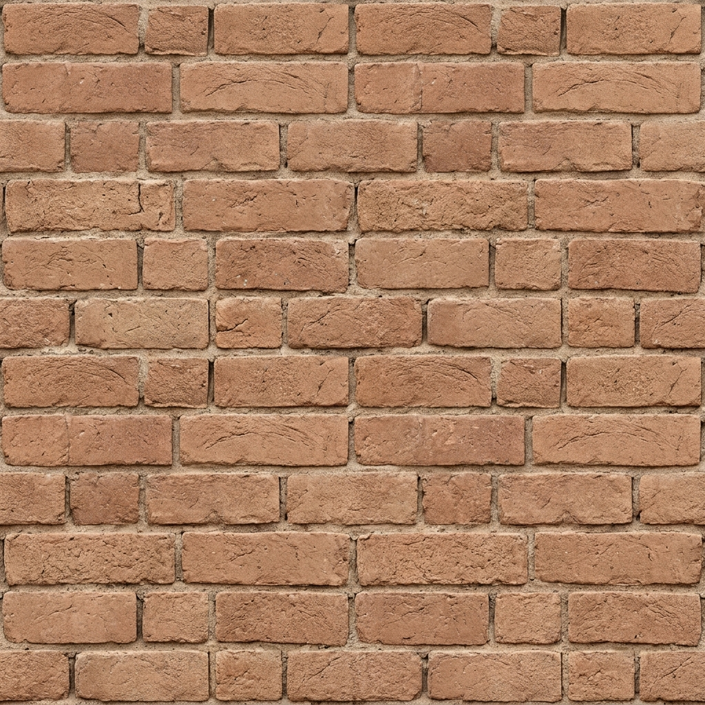
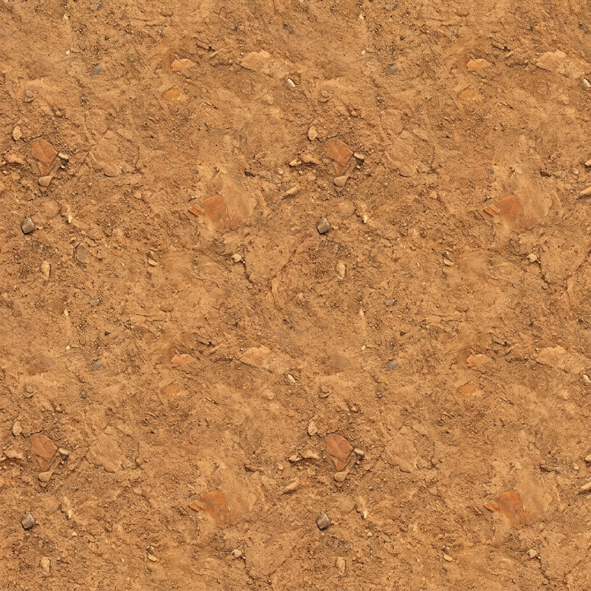
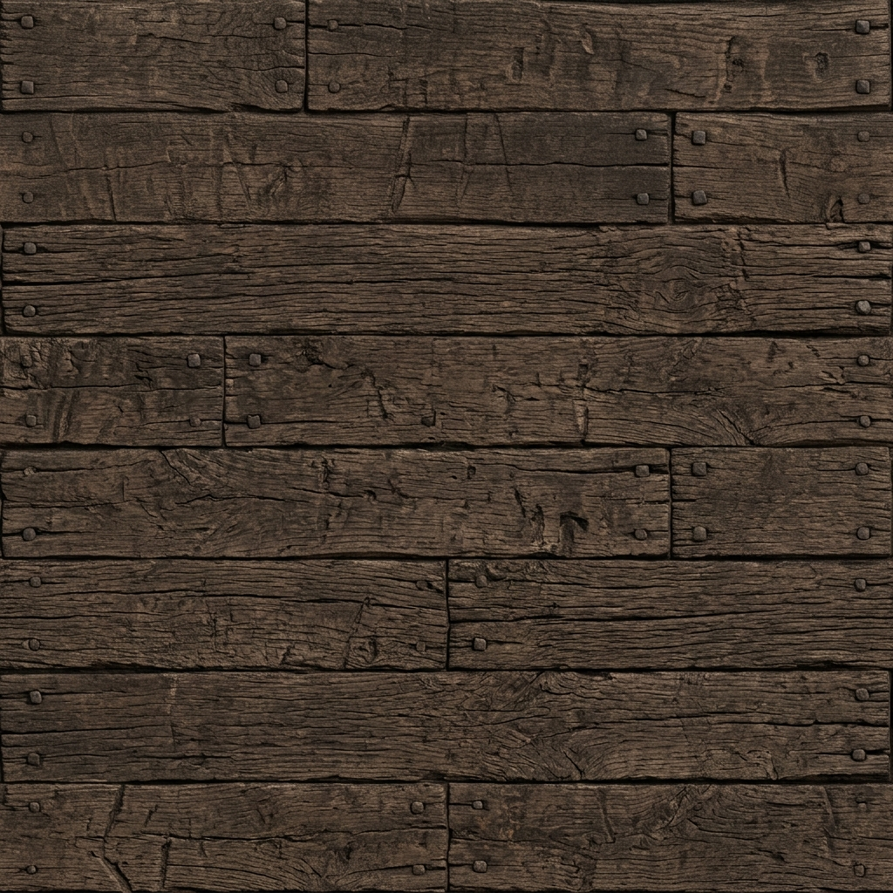

Loading Historical Data & Environments...
Indus Valley
Exploring the City...
Zone Quests
Found:
0/0
Title
Description text goes here.
🔊 Audio On
English
हिंदी (Hindi)
ಕನ್ನಡ (Kannada)
தமிழ் (Tamil)
తెలుగు (Telugu)
✖ Close
🏠 Back to Hub


